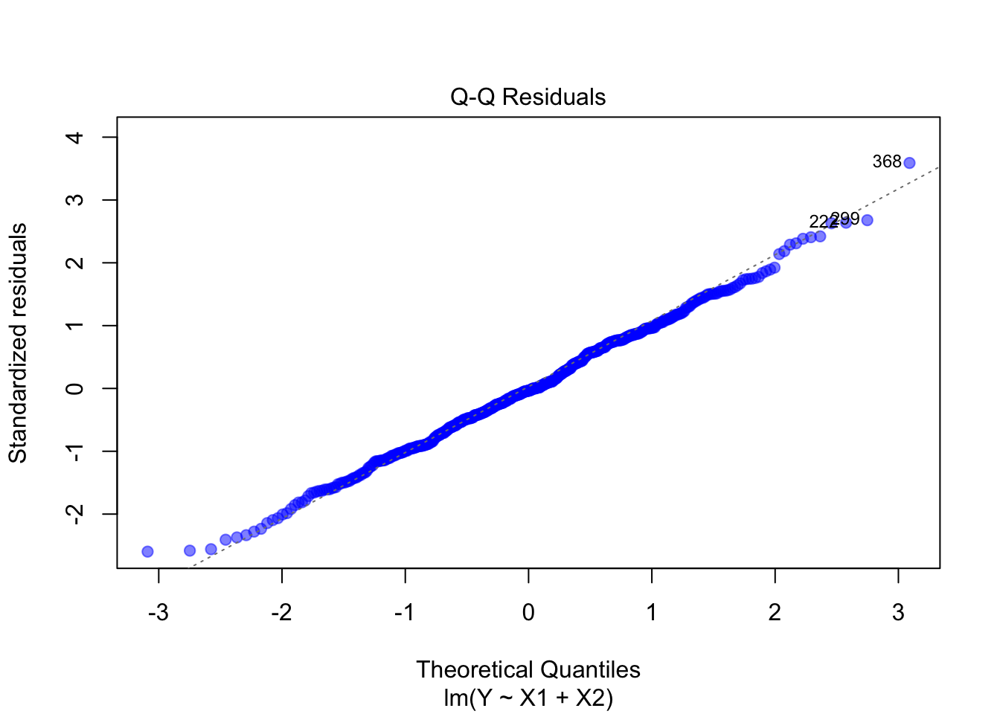
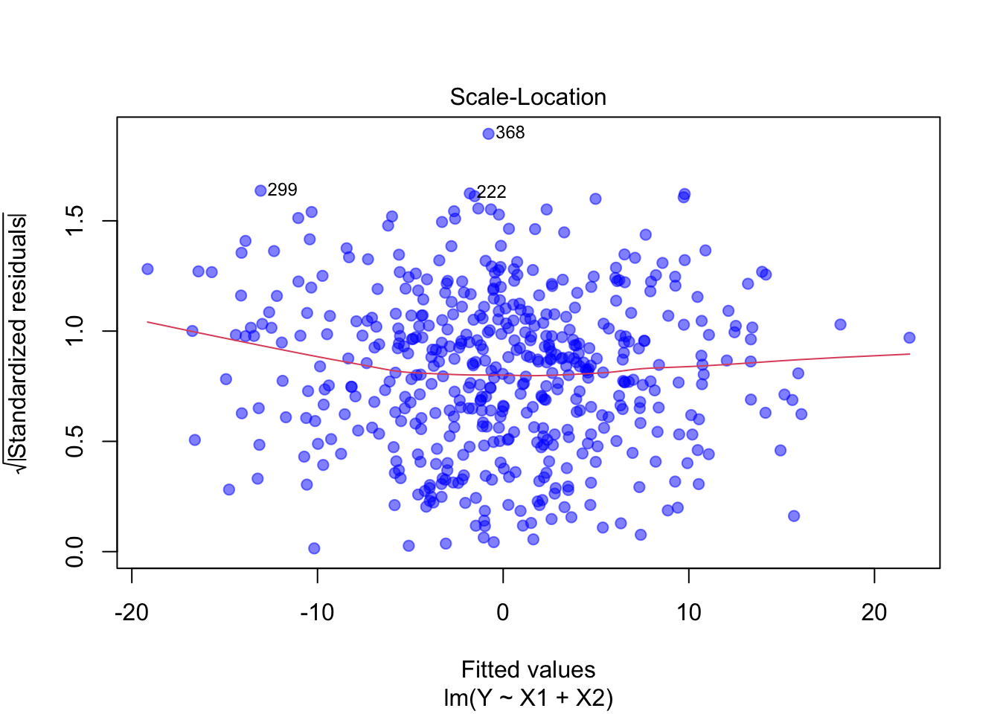
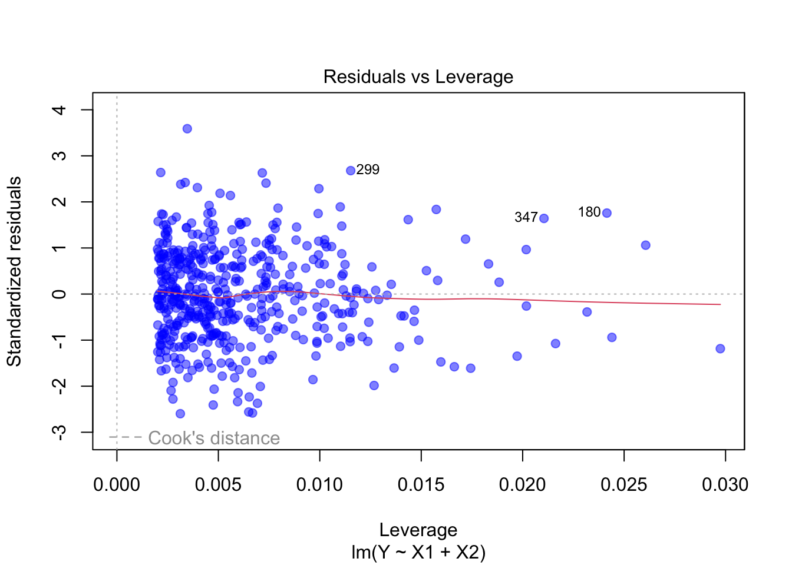
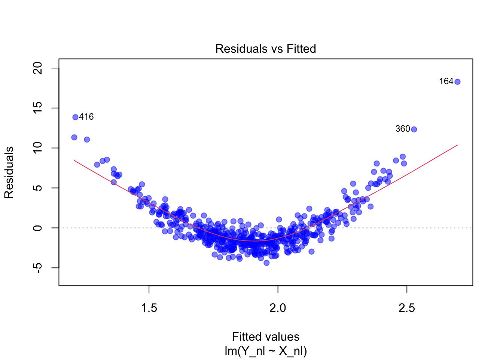
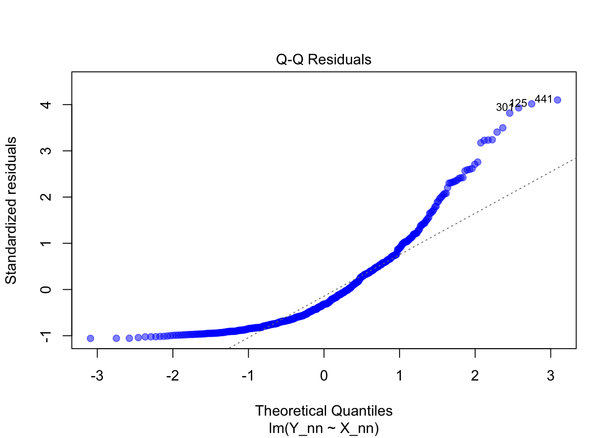
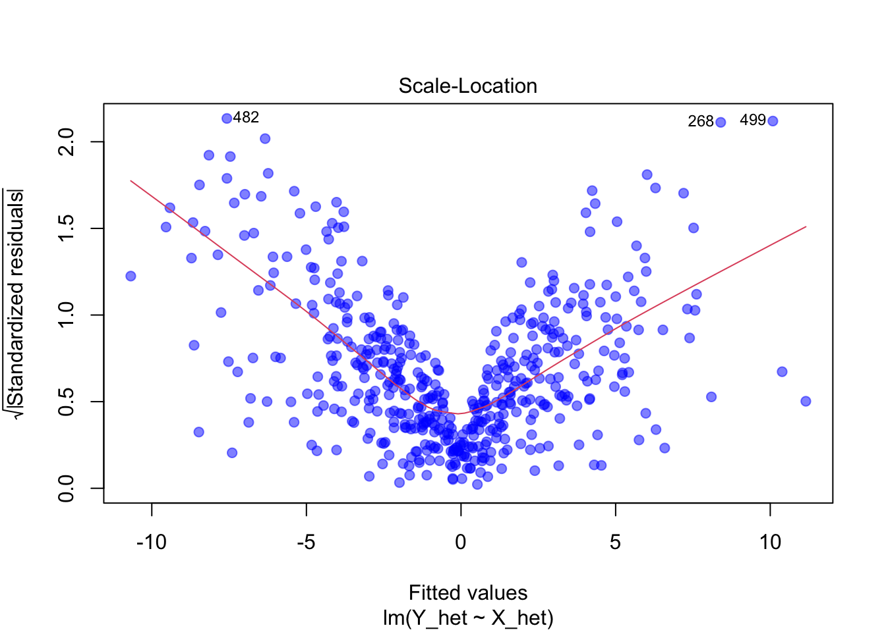
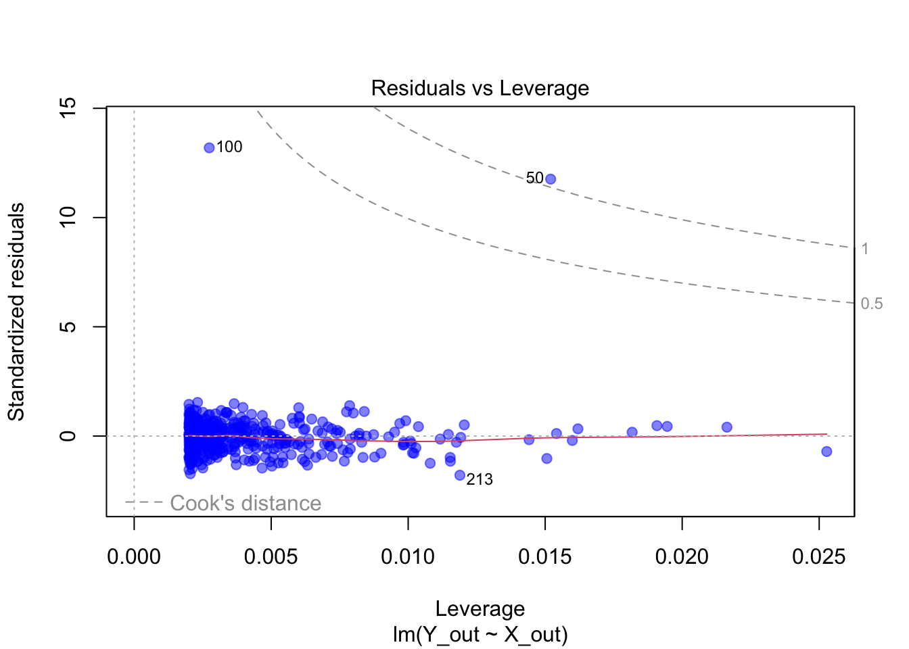

Vorhersage einer metrischen abhängigen Variable (auch Zielvariable oder Kriterium) durch eine oder mehrere unabhängige Variablen (auch Prädiktoren oder Einflussgrössen).
Voraussetzungen:
Ein statistischer Zusammenhang zwischen Prädiktoren und Kriterium sollte plausibel sein.
Ein Modell, das die Abhängigkeit der Zielvariable von den Prädiktoren beschreibt.
Bei einer Regressionsanalyse gibt es eine abhängige Variable (\(y\)), die erklärt werden soll, und eine oder mehrere unabhängige Variablen (\(x_1, x_2, \dots, x_k\)), die mit der Zielvariable in Verbindung stehen.
Die allgemeine Form der multiplen linearen Regression lautet:
\(\beta_0\) ist die Regressionskonstante (Achsenabschnitt), also der geschätzte Wert für \(y\), wenn alle \(x_i = 0\) sind.
\(\beta_1, \beta_2, \dots, \beta_k\) sind die Regressionskoeffizienten, die die Stärke des Zusammenhangs zwischen \(x_i\) und \(y\) beschreiben.
\(\varepsilon\) ist der Fehlerterm, der alle nicht erfassten Einflüsse auf \(y\) berücksichtigt.
Interpretation der Regressionskoeffizienten
Wenn \(x_i\) um eine Einheit steigt, verändert sich \(y\) um \(\beta_i\), unter der Annahme, dass alle anderen \(x_j\) konstant bleiben.
Beispiel: Wenn \(\beta_1 = 2\), dann bedeutet das, dass eine Erhöhung von \(x_1\) um eine Einheit zu einer durchschnittlichen Erhöhung von \(y\) um 2 Einheiten führt.
10.0.1 Einfache lineare Regression
Wir wollen eine Gerade der Form:
\[
\hat{y} = \beta_0 + \beta_{1x} x
\]
\(\hat{y}\) = geschätzter Wert von \(y\)
\(\beta_0\) = Achsenabschnitt (Intercept)
\(\beta_1\) = Steigung der Regressionsgerade
Die Parameter \(\beta_0\) und \(\beta_1\) bestimmen die Lage und Neigung der Regressionsgerade.
10.0.2 Abweichungen (Residuen)
Kein Modell beschreibt die Realität perfekt. Daher gibt es für jeden Datenpunkt eine Abweichung (Residuum) zu der Regressionsgerade:
\[
e_i = y_i - \hat{y}_i
\]
\(e_i\) = Residuum des \(i\)-ten Datenpunkts
\(y_i\) = tatsächlicher Wert
\(\hat{y}_i\) = durch das Modell geschätzter Wert
Das Ziel der linearen Regression ist es, diese Abweichungen so klein wie möglich zu halten.
Beispiel
Wir betrachten die Daten aus Tabelle 9.1 und untersuchen den Zusammenhang zwischen Lernzeit (h/Woche, \(X\)) und Prüfungsnote (\(Y\)).
1. Gegebene Werte
Bereits bekannte Werte aus vorherigen Berechnungen:
beta0 <-coef(model)[1] # Erstes Element ist der Koeffizient für den Achsenabschnittbeta0
(Intercept)
28.62069
\(\Rightarrow\) Ohne Lernzeit (\(X = 0\)) wäre die erwartete Note 28.6.
3. Regressionsgleichung
\[
\hat{Y} \approx 28.6 + 4.14 X
\]
4. Vorhersagewerte \(\hat{Y}\)
Die vorhergesagten Prüfungsnoten für unsere Lernzeiten:
Student
\(X\) (Lernzeit)
\(Y\) (Tatsächlich)
\(\hat{Y}\) (Vorhersage)
A
10
70
\(28.6 + 4.14 \cdot 10 \approx 70.0\)
B
12
80
\(28.6 + 4.14 \cdot 12 \approx 78.3\)
C
5
50
\(28.6 + 4.14 \cdot 5 \approx 49.3\)
D
15
90
\(28.6 + 4.14 \cdot 15 \approx 90.7\)
E
8
60
\(28.6 + 4.14 \cdot 8 \approx 61.7\)
Wir sehen, dass die vorhergesagten Werte gut zu den tatsächlichen Werten passen.
5. Berechnung der Residuen \(e_i\)
Das Residuum ist die Differenz zwischen tatsächlichem Wert \(Y_i\) und vorhergesagtem Wert \(\hat{Y}_i\):
\[
e_i = Y_i - \hat{Y}_i
\]
Student
\(Y\) (Tatsächlich)
\(\hat{Y}\) (Vorhersage)
Residuum \(e_i\)
A
70
70.0
\(70 - 70 = 0.0\)
B
80
78.3
\(80 - 78.3 = 1.7\)
C
50
49.3
\(50 - 49.3 = 0.7\)
D
90
90.7
\(90 - 90.7 = -0.7\)
E
60
61.7
\(60 - 61.7 = -1.7\)
Die Residuen sind klein, was bedeutet, dass die Regressionsgerade gut zu den Daten passt.
Interpretation:
Jede zusätzliche Lernstunde erhöht die erwartete Prüfungsnote um 4.14 Punkte.
Ohne zu lernen (wenn \(X = 0\)), wäre die erwartete Note 28.6.
10.1 Bestimmung der Modellgüte
Die Güte der Anpassung wird durch das Bestimmtheitsmass\(R^2\) beurteilt. Dieses Mass gibt an, welcher Anteil der Gesamtvariation von \(Y\) durch das Modell erklärt wird:
10.1.1 Testen der Signifikanz der Regressionskoeffizienten
Um zu überprüfen, ob die unabhängige Variable tatsächlich einen signifikanten Einfluss auf \(Y\) hat, testen wir die Hypothesen:
Nullhypothese \(H_0\): Kein linearer Zusammenhang \(\Rightarrow \beta_1 = 0\).
Alternativhypothese \(H_1\): Es gibt einen linearen Zusammenhang \(\Rightarrow \beta_1 \neq 0\).
Da wir \(\beta_1\) nicht direkt kennen, schätzen wir ihn mit \(\widehat{\beta}_1\) und testen, ob dieser signifikant von 0 verschieden ist. Dafür berechnen wir die Teststatistik:
\[
T = \frac{\widehat{\beta}_1}{\operatorname{SE}_{\beta_1}}
\]
\(T\) folgt einer t-Verteilung mit \(n - 2\) Freiheitsgraden, da wir die beiden Regressionskoeffizienten (\(\beta_0, \beta_1\)) aus der Stichprobe schätzen.
Wenn \(|T|\) gross genug ist, lehnen wir \(H_0\) ab → \(X\) hat einen signifikanten Einfluss auf \(Y\).
Interpretation des Tests:
Falls der p-Wert kleiner als \(0.05\) ist, lehnen wir \(H_0\) ab. Es gibt einen signifikanten linearen Zusammenhang.
Falls der p-Wert grösser als \(0.05\) ist, können wir keine signifikante Beziehung feststellen.
Beispiel
Wir überprüfen die Signifikanz der Regressionskoeffizienten für das Beispiel der Lernzeit und der Prüfungsnote.
1. Berechnung der Gesamtvariation \(SS_{total}\)
Die Gesamtvariation ist die Summe der quadrierten Abweichungen jedes \(Y_i\) vom Mittelwert \(\bar{Y}\):
2. Berechnung der Residuenvariation \(SS_{residual}\)
Die Residuenvariation ist die Summe der quadrierten Abweichungen der tatsächlichen Werte \(Y_i\) von den vorhergesagten Werten \(\hat{Y}_i\), berechnet mit der Regressionsgleichung:
Coefficients: Die geschätzten Regressionskoeffizienten
(Intercept): \(\widehat{\beta_0}\) = 28.621
Dies ist der y-Achsenabschnitt
Der vorhergesagte y-Wert, wenn x = 0
x: \(\widehat{\beta_1}\) = 4.138
Dies ist die Steigung der Geraden
Für jede Einheit, die x zunimmt, steigt y um 4.138 Einheiten
Für eine detailliertere Analyse können wir die Funktion summary() verwenden:
summary(model)
Call:
lm(formula = note ~ lernzeit, data = noten_lernzeit_tabelle)
Residuals:
1 2 3 4 5
-1.220e-14 1.724e+00 6.897e-01 -6.897e-01 -1.724e+00
Coefficients:
Estimate Std. Error t value Pr(>|t|)
(Intercept) 28.6207 2.1032 13.61 0.000858 ***
lernzeit 4.1379 0.1991 20.79 0.000244 ***
---
Signif. codes: 0 '***' 0.001 '**' 0.01 '*' 0.05 '.' 0.1 ' ' 1
Residual standard error: 1.516 on 3 degrees of freedom
Multiple R-squared: 0.9931, Adjusted R-squared: 0.9908
F-statistic: 432 on 1 and 3 DF, p-value: 0.0002436
Die summary() zeigt uns zusätzlich:
Residuals: Verteilung der Abweichungen zwischen vorhergesagten und tatsächlichen Werten
Minimum: -1.724
Maximum: 1.724
Die Quartile zeigen, wie die Residuen verteilt sind
Idealerweise symmetrisch um 0
Coefficients-Tabelle:
Intercept (\(\widehat{\beta_0}\) = 28.621):
Standardfehler: 2.103
t-Wert: 13.608
p-Wert: 0.001
Signifikant auf dem 0.1% Niveau
Steigung (\(\widehat{\beta_1}\) = 4.138):
Standardfehler: 0.199
t-Wert: 20.785
p-Wert: 0
Signifikant auf dem 0.1% Niveau
Modellgüte:
\(R^2\) = 0.993
99.3% der Varianz in y wird durch x erklärt
Adjustiertes \(R^2\) = 0.991
Berücksichtigt die Anzahl der Prädiktoren
F-Test:
F-Wert: 432
Freiheitsgrade: 1 und 3
p-Wert: 2.4^{-4}
Das Modell ist statistisch signifikant
10.2 Multiple Regression
In der einfachen linearen Regression versuchen wir, den Zusammenhang zwischen einer abhängigen Variable \(Y\) und einem Prädiktor \(X_1\) zu modellieren. Doch was passiert, wenn \(Y\) nicht vollständig durch \(X_1\) alleine erklärt werden kann?
Stellen wir uns vor, wir haben Daten, bei denen wir vermuten, dass \(X_1\) einen Einfluss auf \(Y\) hat. Wir beginnen mit einer einfachen linearen Regression:
Code
set.seed(42)# Daten simulierenn <-100X1 <-rnorm(n, mean =10, sd =2)X2 <-rnorm(n, mean =5, sd =1.5)Y <-3* X1 +2* X2 +rnorm(n, sd =3)# Einfache lineare Regression Y ~ X1model_X1 <-lm(Y ~ X1)# Plotplot(X1, Y, pch =19, col =rgb(105/255, 89/255, 205/255, alpha =0.5), xlab ="X1", ylab ="Y")abline(model_X1, col ="red", lwd =2)
Erste Regression: Y in Abhängigkeit von X1
Wir erkennen, dass \(X_1\) einen deutlichen Einfluss auf \(Y\) hat. Doch die Vorhersagen des Modells sind nicht perfekt – es bleiben Residuen übrig, also Abweichungen zwischen den tatsächlichen Werten von \(Y\) und den durch das Modell prognostizierten Werten.
Diese Residuen sind nicht einfach nur zufälliges Rauschen. Sie könnten Hinweise darauf liefern, dass noch weitere Faktoren im Spiel sind, die wir bisher nicht berücksichtigt haben.
Um das zu überprüfen, untersuchen wir, ob ein weiterer Prädiktor \(X_2\) möglicherweise einen Teil dieser unerklärten Varianz in \(Y\) aufklären kann. Dazu betrachten wir die Residuen der ersten Regression und analysieren, ob sie mit \(X_2\) zusammenhängen:
Code
# Berechne die Residuen der ersten Regressionresiduals_X1 <-resid(model_X1)# Regression der Residuen auf X2model_resid_X2 <-lm(residuals_X1 ~ X2)# Plotplot(X2, residuals_X1, pch =19, col =rgb(105/255, 89/255, 205/255, alpha =0.5), xlab ="X2", ylab ="Residuen von Y ~ X1")abline(model_resid_X2, col ="orange", lwd =2)
Zweite Regression: Residuen von Y ~ X1 in Abhängigkeit von X2
Wir sehen, dass die Residuen tatsächlich einen Zusammenhang mit \(X_2\) aufweisen. Das bedeutet, dass \(X_2\) Varianz in \(Y\) erklärt, die nicht durch \(X_1\) erfasst wurde.
Man könnte diesen Prozess theoretisch weiterführen: Nachdem wir den Einfluss von \(X_2\) modelliert haben, könnten wir die neuen Residuen betrachten und versuchen, diese durch einen weiteren Prädiktor \(X_3\) zu erklären. Und so weiter.
Dieses schrittweise Vorgehen wirft jedoch ein Problem auf: Was passiert, wenn \(X_1\), \(X_2\), …, \(X_k\) miteinander korrelieren?
In diesem Fall ist es schwierig, die individuellen Effekte der einzelnen Prädiktoren zu isolieren.
Der Einfluss von \(X_2\) könnte bereits teilweise in der ersten Regression durch \(X_1\) berücksichtigt worden sein – und umgekehrt.
Durch das schrittweise Vorgehen riskieren wir, Doppelerklärungen oder verzerrte Effekte zu erhalten.
Wir brauchen einen Ansatz, der es uns ermöglicht, den Einfluss mehrerer Prädiktoren gleichzeitig zu berücksichtigen.
Beispiel
Wir versuchen, den Abfluss eines Gebirgsbachs zu modellieren.
\(Y\): Abfluss
\(X_1\): Schneeschmelze
\(X_2\): Niederschlag
Wenn wir den Abfluss \(Y\) zunächst in Abhängigkeit von der Schneeschmelze \(X_1\) modellieren, stellen wir fest, dass ein Teil der Varianz von \(Y\) nicht erklärt wird. Wir vermuten, dass der Niederschlag \(X_2\) einen zusätzlichen Einfluss haben könnte. Also modellieren wir die Residuen aus der ersten Regression in Abhängigkeit von \(X_2\).
Doch hier entsteht ein Problem: Schneeschmelze und Niederschlag sind oft korreliert. Nach starken Niederschlägen folgt häufig eine beschleunigte Schneeschmelze. Wenn wir \(X_2\) nur auf die Residuen von \(X_1\) anwenden, übersehen wir möglicherweise den gemeinsamen Einfluss beider Faktoren.
Das führt zu verzerrten Ergebnissen, da der Niederschlag sowohl einen direkten Einfluss auf den Abfluss hat als auch indirekt über die Schneeschmelze wirkt.
Bemerkung: Wenn die Prädiktoren nicht korrelieren, ist die Regression der Residuen mit weiteren Variablen möglich.
10.2.1 Ziel:
Vorhersage einer metrischen abhängigen Variable durch mehrere unabhängige Variablen (Prädiktoren).
Voraussetzungen:
Ein statistischer Zusammenhang zwischen den Prädiktoren und der Zielvariable sollte plausibel sein.
Ein Modell, das die Abhängigkeit der Zielvariable von den Prädiktoren beschreibt.
Die allgemeine Form der multiplen linearen Regression lautet:
\(X_1, X_2, \ldots, X_k\) sind die unabhängigen Variablen (Prädiktoren).
\(\beta_0\) ist die Regressionskonstante (Achsenabschnitt).
\(\beta_1, \beta_2, \ldots, \beta_k\) sind die Regressionskoeffizienten, die den Einfluss der jeweiligen Prädiktoren auf \(Y\) beschreiben.
\(\varepsilon\) ist der Fehlerterm, der alle nicht erfassten Einflüsse berücksichtigt.
Interpretation der Regressionskoeffizienten
Wenn \(X_i\) um eine Einheit steigt, verändert sich \(Y\) um \(\beta_i\), unter der Annahme, dass alle anderen Prädiktoren konstant bleiben.
Beispiel: Wenn \(\beta_1 = 2\), dann bedeutet das, dass eine Erhöhung von \(X_1\) um eine Stunde Lernzeit zu einer durchschnittlichen Erhöhung der Prüfungsnote um 2 Punkte führt.
Mit \(R^2 =\) 1 sehen wir, dass das unser Modell äusserst gut zu den Daten passt.
10.3 Anwendungsbedingungen
10.3.1 Lineare Beziehung zwischen den Variablen
Die lineare Regression setzt voraus, dass der Zusammenhang zwischen der abhängigen Variable (\(Y\)) und den Prädiktoren (\(X_1, X_2, \dots, X_k\)) linear ist.
- In einem Scatterplot sollte eine ungefähr geradlinige Beziehung zwischen den Variablen erkennbar sein.
- Falls ein nichtlinearer Zusammenhang vorliegt, kann eine Transformation der Variablen (z.B. logarithmisch oder quadratisch) sinnvoll sein.
10.3.2 Keine perfekte Multikollinearität
Kollinearität beschreibt die Tatsache, dass zwei oder mehrere Prädiktoren in einem Regressionsmodell stark miteinander korrelieren.
Die unabhängigen Variablen dürfen untereinander nicht perfekt korrelieren (\(i \neq j: \text{corr}(X_i, X_j) = 1\)) d.h. es darf keine Linearkombination anderer unabhängiger Variablen sein.
Matrix ist sonst nicht invertierbar.
Folgen:
Schätzungen der Regressionsparameter sind unzuverlässig
Standardfehler der Regressionskoeffizienten sind gross
t-Werte sind klein
Anzeichen:
Resultate werden stark vom Weglassen einer Beobachtung beeinflusst
Vorzeichen der Regressionskoeffizienten ist anders als erwartet
Hohe Korrelationen der unabhängigen Variablen (\(> |0.8|\)) deuten auf mögliche Kollinearität hin
Varianzinflationsfaktor (VIF) misst die Abhängigkeit der Varianz des geschätzten Regressionskoeffizienten aufgrund der Korrelation zwischen unabhängigen Variablen. VIF-Werte \(> 10\) gelten als kritisch.
vif()
Behandlung:
Weglassen von korrelierenden Prädiktoren
Neue Prädiktoren finden
Hauptkomponentenanalyse (PCA): Reduktion der Dimensionalität der Daten durch PCA, um unkorrelierte Hauptkomponenten zu erhalten.
10.3.3 Heteroskedastizität
Heteroskedastizität beschreibt die Tatsache, dass die Varianz der Residuen nicht konstant ist. Das bedeutet, dass die Residuen nicht gleichmässig um den Mittelwert streuen, sondern eine zunehmende oder abnehmende Varianz aufweisen.
Ursachen dafür können sein:
Messfehler werden über die Zeit kleiner
Befragungen vor und nach dem Lernprozess
Verhalten ist abhängig vom Einkommen, so dass reichere Personen mehr Wahlmöglichkeiten haben als ärmere
Bei aggregierten Werten sind Klassen mit kleinem \(n\) unsicherer und streuen mehr als Klassen mit grossem \(n\)
Tests:
Zerlegung der Daten und Vergleich von Subsets (z.B. Zeitperioden)
Goldfeld-Quandt-Test (univariate Regression)
White-Test (multiple Regression)
Behandlung:
Methode der gewichteten kleinsten Quadrate. Werte bekommen dort weniger Gewicht, wo die Streuung gross ist.
10.3.4 Normalverteilte Residuen
Die Verteilung der Residuen sollte ungefähr normal sein. Dies ist besonders wichtig für:
t-Tests auf die Regressionskoeffizienten
F-Tests zur Bewertung der Modellgüte
Konfidenzintervalle für die \(\beta\)-Koeffizienten
Ein Q-Q-Plot kann helfen, die Normalverteilung der Residuen zu überprüfen.
Falls die Residuen nicht normalverteilt sind:
Transformation der abhängigen Variable
Bootstrapping-Verfahren zur Schätzung der Koeffizienten
10.3.5 Keine starken Ausreißer oder einflussreichen Datenpunkte
Einzelne Datenpunkte mit extremen Werten können die Regression stark beeinflussen.
Leverage-Plot oder Cook’s Distance kann verwendet werden, um einflussreiche Punkte zu identifizieren.
Falls ein Ausreißer zu stark ist, sollte überprüft werden, ob ein Messfehler vorliegt oder ob der Punkt sinnvoll entfernt werden kann.
10.3.6 Beispielauswertungen
10.3.6.1 Optimale Residuendiagnostik mit geeigneten Daten
Code
library(ggplot2)# Synthetische Daten perfekt simulierenn <-500X1 <-rnorm(n, mean =10, sd =2) # Normalverteilte PrädiktorenX2 <-rnorm(n, mean =5, sd =1.5)X1 <-scale(X1, center =TRUE, scale =FALSE)X2 <-scale(X2, center =TRUE, scale =FALSE)# Perfekte lineare Beziehung# Fehler sind normalverteilt mit konstanter Varianzerrors <-rnorm(n, mean =0, sd =1) # Normalverteilte Residuen# Lineares ModellY <-3* X1 +2* X2 + errors# Lineares Regressionsmodellperfektes_modell <-lm(Y ~ X1 + X2)# Diagnostische Plotsdot_color <-rgb(0, 0, 1, 0.5)plot(perfektes_modell, col = dot_color, pch =19)
Linearität: Die Residuen streuen zufällig um die Nulllinie. Kein systematisches Muster erkennbar – ein Hinweis auf eine lineare Beziehung.

Normalverteilung der Residuen: Die Punkte liegen nahe der Diagonale im Q-Q-Plot. Dies zeigt, dass die Residuen normalverteilt sind.

Varianzhomogenität: Die Punkte im Scale-Location-Plot sind gleichmässig verteilt, ohne Trichterform. Das deutet auf konstante Varianz (Homoskedastizität) hin.

Ausreisser: Im Leverage-Plot gibt es keine Punkte mit hoher Cook’s Distance. Dies zeigt, dass es keine einflussreichen Ausreisser gibt.
10.3.6.2 Negative Residuendiagnostik mit schlechten Daten
Code
set.seed(123)# Nicht-Linearitätn <-500X_nl <-rnorm(n, mean =0, sd =1)Y_nl <-2* X_nl^2+rnorm(n, 0, 1)modell_nl <-lm(Y_nl ~ X_nl) # Falsch spezifiziert (linear)# Nicht-normalverteilte ResiduenX_nn <-rnorm(n)Y_nn <-3* X_nn +rexp(n, rate =1) # Exponentiell verteilte Fehlermodell_nn <-lm(Y_nn ~ X_nn)# HeteroskedastizitätX_het <-rnorm(n)Y_het <-4* X_het +rnorm(n, 0, sd =abs(X_het) *2)modell_het <-lm(Y_het ~ X_het)# AusreisserX_out <-rnorm(n)Y_out <-5* X_out +rnorm(n, 0, 1)Y_out[c(50, 100)] <- Y_out[c(50, 100)] +20# Ausreisser hinzufügenmodell_out <-lm(Y_out ~ X_out)# Diagnostische Plots (jeweils der relevante)plot(modell_nl, which =1, col = dot_color, pch =19) # Nicht-Linearität: Residuals vs Fittedplot(modell_nn, which =2, col = dot_color, pch =19) # Nicht-normalverteilte Residuen: Q-Q-Plotplot(modell_het, which =3, col = dot_color, pch =19) # Heteroskedastizität: Scale-Locationplot(modell_out, which =5, col = dot_color, pch =19) # Ausreisser: Residuals vs Leverage

Nicht-Linearität: Die Residuen zeigen ein gebogenes Muster. Dies deutet darauf hin, dass das Modell die wahre Beziehung nicht korrekt abbildet.

Nicht-Normalverteilte Residuen: Im Q-Q-Plot weichen die Punkte deutlich von der Diagonalen ab. Dies deutet auf eine Verletzung der Normalverteilungsannahme hin.

Heteroskedastizität: Im Scale-Location-Plot ist ein trichterförmiges Muster zu erkennen. Dies weist auf eine zunehmende Varianz der Residuen hin.

Ausreisser: Im Residuals vs Leverage-Plot sind Punkte mit hoher Cook’s Distance sichtbar. Sie haben einen starken Einfluss auf das Modell.
10.4 Modellvalidierung
10.4.1 Kreuzvalidierung
Die Kreuzvalidierung ist eine Methode zur Bewertung der Vorhersagegüte eines Regressionsmodells. Dabei wird der Datensatz in mehrere Teilmengen (sogenannte Folds) aufgeteilt. Das Modell wird wiederholt auf verschiedenen Kombinationen von Trainings- und Testdaten geschätzt, um zu überprüfen, wie gut es auf unbekannte Daten generalisiert.
10.4.1.1 Vorgehensweise bei der K-Fold-Kreuzvalidierung:
Aufteilung der Daten: Der Datensatz wird in \(k\) gleich grosse Teilmengen (Folds) aufgeteilt.
Modelltraining: In jeder der \(k\) Iterationen wird das Modell mit \((k-1)\) Folds trainiert.
Modelltest: Der verbliebene Fold dient als Testdatensatz zur Bewertung des Modells.
Ergebnissynthese: Die Gütekriterien (z.B. mittlerer quadratischer Fehler (MSE), \(R^2\)) werden über alle Iterationen gemittelt.
Diese Methode liefert eine robustere Schätzung der Modellgüte als eine einfache Trainings-Test-Aufteilung.
Beispiel einer Multiplen Regression
In diesem Beispiel verwenden wir den Datensatz mtcars, um ein multiples lineares Regressionsmodell zu erstellen. Unser Ziel ist es, den Benzinverbrauch (mpg) von Fahrzeugen basierend auf mehreren Einflussgrössen vorherzusagen.
Datensatz und Ziel
Datensatz:mtcars mit 32 Fahrzeugen
Zielvariable:mpg (Miles per Gallon, Benzinverbrauch)
Prädiktoren:
wt (Gewicht des Fahrzeugs in 1000 Pfund)
hp (Motorleistung in PS)
cyl (Anzahl Zylinder)
Wir möchten überprüfen, wie gut diese Variablen den Benzinverbrauch gemeinsam vorhersagen.
Durchführung der 5-Fold-Kreuzvalidierung
Für die 5-Fold-Kreuzvalidierung wird der Datensatz in 5 gleich grosse Teilmengen (Folds) aufgeteilt. In jeder der 5 Iterationen wird das Modell mit 4 Folds trainiert und mit dem verbleibenden Fold getestet. Die Gütekriterien werden über alle Iterationen gemittelt.
# Daten und benötigte Pakete ladendata(mtcars)library(caret)# Kreuzvalidierung mit 5 Foldscv_control <-trainControl(method ="cv", number =5)# Training des multiplen Regressionsmodells mit Kreuzvalidierungcv_model <-train( mpg ~ wt + hp + cyl,data = mtcars,method ="lm",trControl = cv_control)# Ergebnisse anzeigencv_model
1
cv_control: Definiert die Kreuzvalidierung mit 5 Folds.
2
mpg ~ wt + hp + cyl: Definiert die abhängige Variable (mpg) und die unabhängigen Variablen (wt, hp, cyl).
3
data = mtcars: Definiert den Datensatz, der für das Modelltraining verwendet wird.
4
method = "lm": Definiert das Regressionsmodell als lineare Regression.
5
trControl = cv_control: Definiert die Kreuzvalidierung mit 5 Folds.
Linear Regression
32 samples
3 predictor
No pre-processing
Resampling: Cross-Validated (5 fold)
Summary of sample sizes: 24, 24, 28, 26, 26
Resampling results:
RMSE Rsquared MAE
2.536794 0.8652719 2.134368
Tuning parameter 'intercept' was held constant at a value of TRUE
Ergebnisse der Kreuzvalidierung
Nach der Durchführung der Kreuzvalidierung liefert das Modell folgende Kennwerte:
RMSE (Root Mean Squared Error): 2.537
Der RMSE misst den durchschnittlichen quadratischen Fehler der Vorhersagen. Ein niedriger Wert deutet auf eine gute Modellanpassung hin.
\(R^2\) (Bestimmtheitsmass): 0.865
Der \(R^2\)-Wert zeigt, wie viel der Varianz von mpg durch die Prädiktoren wt, hp und cyl erklärt werden kann. Werte nahe 1 deuten auf eine hohe Erklärungskraft des Modells hin.
MAE (Mean Absolute Error): 2.134
Der MAE misst den durchschnittlichen absoluten Vorhersagefehler. Im Gegensatz zum RMSE ist er weniger empfindlich gegenüber Ausreissern.
Interpretation der Ergebnisse
Das Modell zeigt folgende Leistungswerte:
Vorhersagegenauigkeit (RMSE): Der RMSE beträgt 2.537.
Ein RMSE < 3 deutet auf eine gute Anpassung des Modells hin.
Werte > 5 würden auf eine ungenügende Modellanpassung hindeuten.
In diesem Fall ist der Wert zufriedenstellend.
Erklärte Varianz (\(R^2\)): Der \(R^2\)-Wert beträgt 0.865.
Ein \(R^2\) > 0.7 gilt als sehr gut, da mehr als 70 % der Varianz von mpg durch die Prädiktoren erklärt wird.
Ein Wert < 0.5 würde darauf hindeuten, dass das Modell wichtige Prädiktoren vermissen könnte.
Hier zeigt der Wert eine starke Erklärungskraft.
Durchschnittlicher Fehler (MAE): Der MAE beträgt 2.134.
Ein MAE < 3 deutet darauf hin, dass die durchschnittlichen Vorhersagefehler gering sind.
Werte > 5 könnten auf systematische Fehler im Modell hinweisen.
In unserem Fall ist der Fehler akzeptabel.
Fazit
Das multiple Regressionsmodell erklärt einen grossen Anteil der Varianz von mpg und liefert eine präzise Vorhersage. Die Kreuzvalidierung zeigt, dass das Modell auch bei unbekannten Daten stabile Ergebnisse liefert. Eventuelle Optimierungen könnten durch die Einbeziehung weiterer Prädiktoren oder Interaktionsterme erreicht werden.
10.4.2 F-Test
Der F-Test ist ein Hypothesentest, der die Güte des Regressionsmodells als Ganzes überprüft.
\[
F = \frac{\frac{R^2}{k}}{\frac{1-R^2}{n-(k+1)}} = \frac{\text{erklärte Varianz}}{\text{unerklärte Varianz}}
\]
\(R^2\) ist das multiple Bestimmtheitsmass
\(k\) ist die Anzahl der unabhängigen Variablen
\(n\) ist die Anzahl der Beobachtungen
Der F-Wert sagt, ob das Modell besser ist als einfach die Annahme des Mittelwerts von \(Y\) zu nehmen. D.h. ob